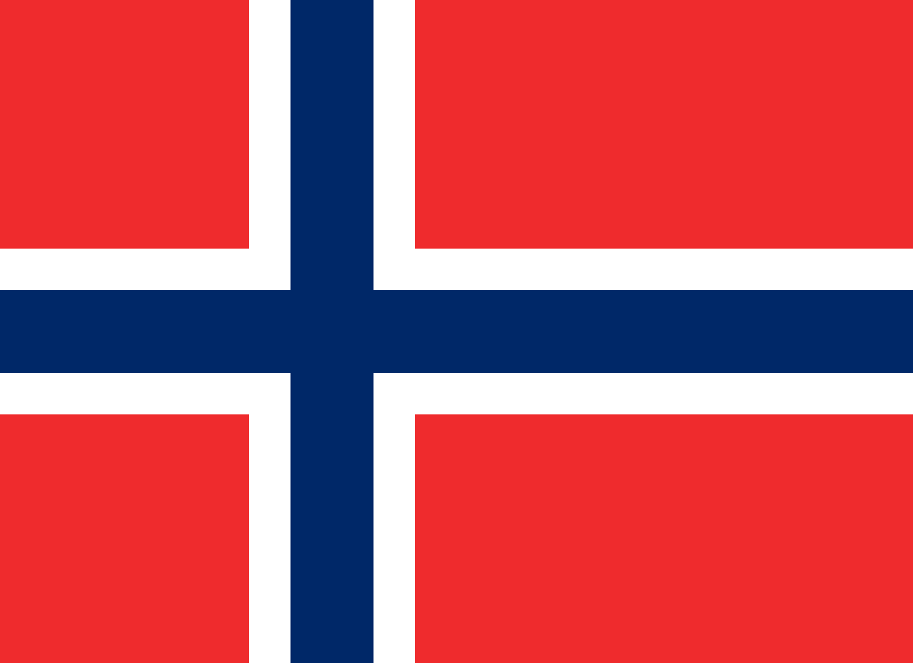

Żukowski Michał
Żukowski Michał
Place: Żmigród, Poland
Rating: 2588.66, Std: 76.78, Rank: 10
First game: 2008-10-19, Last game: 2026-08-18
Top rating: 2588.66 (2026-08-18)
Games: 284, Wins: 162, Draws: 35, Losses: 87
Gy1: 18, Gy2: 37, Gy5: 37
| Gomoku Team World Championship 2026 |
|---|
| Date | 2026-08-18 | Rating | 2588.66 |
|---|
| Round | Color | Result | Opponent |
|---|
| 1 | Black | Draw |  Lebedev Alexey Lebedev Alexey | 2319.09 |
| 2 | Black | Win |  Purk Tauri Purk Tauri | 2276.44 |
| 3 | Black | Loss |  Muzika Martin Muzika Martin | 2652.14 |
| 4 | Black | Win | Souček Lukáš | 2491.75 |
| 5 | White | Win |  Poghosyan Vahe Poghosyan Vahe | 2258.62 |
| 6 | Black | Win | Lebedev Alexey | 2319.09 |
| 7 | Black | Win | Topkin Georg-Romet | 2536.07 |
| 8 | Black | Win | Muzika Martin | 2652.14 |
| 9 | Black | Win | Souček Lukáš | 2491.75 |
| 10 | Black | Win | Poghosyan Vahe | 2258.62 |
| 19th Polish Gomoku Championship |
|---|
| Date | 2025-12-07 | Rating | 2563.85 |
|---|
| Round | Color | Result | Opponent |
|---|
| 1 | Black | Win | Kolk Kuno | 2246.08 |
| 2 | Black | Win | Majksner Łukasz | 2394.81 |
| 3 | White | Loss | Fitzermann Adrian | 2719.64 |
| 4 | White | Loss | Topkin Georg-Romet | 2520.55 |
| 5 | White | Win | Małowiejski Piotr | 2292.89 |
| 6 | White | Win | Souček Lukáš | 2486.74 |
| 7 | White | Loss | Žižka Petr | 2483.11 |
| 8 | White | Win | Godlewski Filip | 1994.31 |
| Gomoku World Championship 2025, AT |
|---|
| Date | 2025-08-15 | Rating | 2555.89 |
|---|
| Round | Color | Result | Opponent |
|---|
| 1 | White | Draw |  Chang Yi-Feng Chang Yi-Feng | 2498.08 |
| 2 | White | Win | Zajk Michał | 2558.37 |
| 3 | White | Loss | Fitzermann Adrian | 2705.33 |
| 4 | Black | Draw | Fňukal František | 2510.23 |
| 5 | White | Draw |  Tóth Gergő Tóth Gergő | 2586.45 |
| 6 | White | Loss | Topkin Georg-Romet | 2511.92 |
| 7 | Black | Win | Laube Pavel | 2595.87 |
| 8 | White | Loss | Muzika Martin | 2651.27 |
| 9 | White | Win | Souček Lukáš | 2488.43 |
| 10 | Black | Loss |  Eged Igor Eged Igor | 2508.92 |
| 11 | Black | Loss | Žižka Petr | 2489.26 |
| Gomoku World Championship 2025, QT |
|---|
| Date | 2025-08-07 | Rating | 2555.84 |
|---|
| Round | Color | Result | Opponent |
|---|
| 1 | Black | Win | Holba Josef | 2217.32 |
| 2 | Black | Loss | Žižka Petr | 2488.85 |
| 3 | Black | Win | Chang Yi-Feng | 2497.87 |
| 4 | White | Draw | Holub Matěj | 2382.26 |
| 5 | White | Loss | Zajk Michał | 2558.42 |
| 6 | Black | Win | Horák Jakub | 2486.32 |
| 7 | White | Win | Fojtík Jakub | 2281.10 |
| 8 | White | Draw | Fňukal František | 2510.93 |
| Gomoku World Championship 2019, AT |
|---|
| Date | 2019-08-10 | Rating | 2578.28 |
|---|
| Round | Color | Result | Opponent |
|---|
| 1 | White | Loss | Muratov Ilya | 2530.40 |
| 2 | White | Loss | Muzika Martin | 2651.03 |
| 3 | White | Win | Hõbemägi Martin | 2573.01 |
| 4 | White | Loss | Tóth Gergő | 2634.20 |
| 5 | Black | Win |  Bulatovsky Oleg Bulatovsky Oleg | 2529.11 |
| 6 | Black | Win | Katsev Ilya | 2349.74 |
| 7 | Black | Win | Lebedev Alexey | 2335.72 |
| 8 | White | Win | László Zoltán | 2707.74 |
| 9 | Black | Win | Horváth Márk | 2286.20 |
| 10 | Black | Loss | Tesařík Štěpán | 2520.58 |
| 11 | White | Win | Karasyov Maxim | 2524.31 |
| Gomoku World Championship 2019, QT |
|---|
| Date | 2019-08-02 | Rating | 2578.06 |
|---|
| Round | Color | Result | Opponent |
|---|
| 1 | Black | Loss | Balabhai Viktor | 2323.11 |
| 2 | Black | Win | Eged Igor | 2392.18 |
| 3 | Black | Win | Smirnov Anatolie | 2288.01 |
| 4 | White | Win | Kozhin Mikhail | 2453.40 |
| 5 | White | Win | Tesařík Štěpán | 2521.28 |
| 6 | White | Loss | Karasyov Maxim | 2525.30 |
| 7 | Black | Loss | Souček Lukáš | 2419.95 |
| 8 | Black | Win |  Riherts Matiss Riherts Matiss | 2367.96 |
| 9 | White | Win | Laube Pavel | 2527.39 |
| Gomoku Team World Championship 2018 |
|---|
| Date | 2018-08-17 | Rating | 2574.33 |
|---|
| Round | Color | Result | Opponent |
|---|
| 1 | Black | Win | Mirme Madli | 1993.81 |
| 2 | Black | Win | Fedotov Denis | 2315.28 |
| 3 | White | Draw | Purkrábek Jan | 2219.02 |
| 4 | Black | Win | Bogatyrev Aleksandr | 2170.98 |
| 5 | White | Win | Eged Igor | 2424.48 |
| 6 | White | Win | Kořínková Soňa | 1828.19 |
| 7 | White | Loss | Osipov Denis | 2650.93 |
| 8 | White | Loss | Tóth Gergő | 2678.07 |
| 9 | Black | Win | Laube Pavel | 2504.43 |
| 14th Polish Gomoku Championship |
|---|
| Date | 2018-08-11 | Rating | 2574.31 |
|---|
| Round | Color | Result | Opponent |
|---|
| 1 | White | Win | Łukasik Szczepan | 2256.38 |
| 2 | Black | Win | Majksner Łukasz | 2361.06 |
| 3 | Black | Loss | László Zoltán | 2688.47 |
| 4 | Black | Win | Gyenes Gábor | 2338.05 |
| 5 | White | Loss | Muzika Martin | 2636.13 |
| 6 | White | Win | Tóth Gergő | 2678.62 |
| 7 | White | Win | Zajk Michał | 2529.90 |
| 8 | Black | Win | Eged Igor | 2425.46 |
| Gomoku World Championship 2017, AT |
|---|
| Date | 2017-07-29 | Rating | 2545.08 |
|---|
| Round | Color | Result | Opponent |
|---|
| 1 | White | Win | Žižka Petr | 2438.68 |
| 2 | White | Win | Katsev Ilya | 2371.66 |
| 3 | Black | Loss | Tarannikov Yuriy | 2578.58 |
| 4 | White | Loss | Laube Pavel | 2516.29 |
| 5 | White | Win | Tóth Gergő | 2679.25 |
| 6 | Black | Win | Muratov Ilya | 2519.95 |
| 7 | White | Loss | Dupszki Rudolf | 2676.69 |
| 8 | White | Loss | Muzika Martin | 2597.53 |
| 9 | White | Win | Kozhin Mikhail | 2482.86 |
| 10 | Black | Loss | Osipov Denis | 2595.72 |
| 11 | White | Loss | László Zoltán | 2665.46 |
| Gomoku World Championship 2017, QT |
|---|
| Date | 2017-07-22 | Rating | 2544.68 |
|---|
| Round | Color | Result | Opponent |
|---|
| 1 | Black | Draw | Kostlivý Radim | 2289.79 |
| 2 | Black | Loss | Zajk Michał | 2527.17 |
| 3 | Black | Win | Metreveli Georgiy | 2067.95 |
| 4 | Black | Win | Purkrábek Jan | 2222.96 |
| 5 | Black | Loss | Brachaczek Bogdan | 2307.63 |
| 6 | White | Win | Eged Igor | 2446.77 |
| 7 | Black | Win | Gyenes Gábor | 2322.30 |
| 8 | White | Win | Žižka Petr | 2437.94 |
| 12th Polish Gomoku Championship |
|---|
| Date | 2016-11-13 | Rating | 2538.03 |
|---|
| Round | Color | Result | Opponent |
|---|
| 1 | White | Draw | Majksner Łukasz | 2354.96 |
| 2 | White | Win | Małowiejski Piotr | 2208.52 |
| 3 | White | Win | Wacławik Adam | 1980.99 |
| 4 | Black | Draw | Zajk Michał | 2535.16 |
| 5 | White | Win | Bieniek Piotr | 2388.41 |
| 6 | White | Loss | Gorzecki Marek | 2352.84 |
| 7 | White | Win | Sekułowicz Jan | 2135.60 |
| 8 | Black | Win | Brachaczek Bogdan | 2296.74 |
| Gomoku Team World Championship 2016, Final |
|---|
| Date | 2016-05-04 | Rating | 2535.70 |
|---|
| Round | Color | Result | Opponent |
|---|
| 1 | Black | Win | Laube Pavel | 2518.74 |
| 2 | Black | Win | Mirme Madli | 1980.52 |
| 3 | Black | Win | Lu Wei-Yuan | 2438.04 |
| Gomoku Team World Championship 2016, Preliminary |
|---|
| Date | 2016-05-01 | Rating | 2535.50 |
|---|
| Round | Color | Result | Opponent |
|---|
| 1 | White | Win | Narva Mai | 2164.14 |
| 2 | Black | Loss | Laube Pavel | 2518.87 |
| 3 | White | Win | Lu Wei-Yuan | 2437.98 |
| 4 | Black | Win | Olumets Erko | 2007.35 |
| 5 | White | Win | Mirme Madli | 1980.58 |
| 6 | Black | Loss | Katsev Ilya | 2295.36 |
| 11th Polish Gomoku Championship |
|---|
| Date | 2015-11-15 | Rating | 2532.35 |
|---|
| Round | Color | Result | Opponent |
|---|
| 1 | White | Loss | Fialová Pavlína | 2258.26 |
| 2 | Black | Win | Kodatová Václava | 1929.43 |
| 3 | White | Draw | Bulatovsky Oleg | 2430.66 |
| 4 | Black | Win | Brachaczek Bogdan | 2284.04 |
| 5 | Black | Win | Hegedűs Attila | 2414.27 |
| 6 | Black | Win | Zajk Michał | 2556.69 |
| 7 | White | Loss | Lange Jarosław | 2463.58 |
| 8 | Black | Draw | Wojtasiński Marcin | 2518.73 |
| 10th Polish Gomoku Championship |
|---|
| Date | 2014-11-16 | Rating | 2536.60 |
|---|
| Round | Color | Result | Opponent |
|---|
| 1 | White | Win | Sekułowicz Jan | 2109.64 |
| 2 | White | Draw | Zajk Michał | 2566.73 |
| 3 | White | Loss | Lange Jarosław | 2443.77 |
| 4 | Black | Win | Zajk Radosław | 2145.01 |
| 5 | Black | Win | Małowiejski Piotr | 2205.13 |
| 6 | White | Draw | Fitzermann Adrian | 2577.38 |
| 7 | Black | Win | Bulatovsky Oleg | 2433.07 |
| 8 | Black | Win | Tarasiński Paweł | 2279.96 |
| Gomoku Team European Championship 2014 |
|---|
| Date | 2014-08-23 | Rating | 2535.94 |
|---|
| Round | Color | Result | Opponent |
|---|
| 1 | White | Win | Mirme Madli | 1997.29 |
| 2 | White | Win | Souček Lukáš | 2133.22 |
| 3 | Black | Loss | Tóth Gergő | 2608.25 |
| 4 | Black | Draw | Kozhin Mikhail | 2513.29 |
| 5 | White | Loss | Nipoti Vladimir | 2579.84 |
| 6 | White | Win | Purkrábek Jan | 2267.94 |
| 7 | Black | Win | Katsev Ilya | 2270.16 |
| 8 | Black | Win |  Ikonen Jussi Ikonen Jussi | 2061.26 |
| 9 | White | Win | Souček Lukáš | 2133.22 |
| 10 | Black | Draw | Tóth Gergő | 2608.25 |
| 11 | Black | Win | Kozhin Mikhail | 2513.29 |
| 12 | Black | Draw | Nipoti Vladimir | 2579.84 |
| 13 | Black | Win | Purkrábek Jan | 2267.94 |
| 14 | Black | Win | Katsev Ilya | 2270.16 |
| 9th Polish Gomoku Championship |
|---|
| Date | 2013-11-10 | Rating | 2520.37 |
|---|
| Round | Color | Result | Opponent |
|---|
| 1 | White | Win | Chańcza Tomasz | 1585.16 |
| 2 | Black | Win | Harmasz Adam | 2407.87 |
| 3 | White | Loss | Zajk Michał | 2605.47 |
| 4 | Black | Draw | Bulatovsky Oleg | 2434.62 |
| 5 | Black | Win | Małowiejski Piotr | 2205.54 |
| 6 | Black | Win | Tarasiński Paweł | 2319.26 |
| 7 | White | Draw | Bieniek Piotr | 2367.19 |
| 8 | Black | Win | Brachaczek Bogdan | 2291.50 |
| 9 | White | Win | Sekułowicz Jan | 2118.51 |
| Gomoku World Championship 2013, AT |
|---|
| Date | 2013-08-14 | Rating | 2513.84 |
|---|
| Round | Color | Result | Opponent |
|---|
| 1 | Black | Loss | Fitzermann Adrian | 2566.79 |
| 2 | White | Loss | Zajk Michał | 2606.40 |
| 3 | White | Loss | Nipoti Vladimir | 2572.79 |
| 4 | Black | Loss | Kozhin Mikhail | 2521.36 |
| 5 | Black | Win | Balabhai Viktor | 2334.02 |
| 6 | White | Win | Karasyov Maxim | 2446.21 |
| 7 | Black | Loss | Laube Pavel | 2540.67 |
| 8 | Black | Loss | Pajuste Renee | 2358.82 |
| 9 | Black | Loss | Demján Attila | 2853.25 |
| 10 | Black | Win | Muratov Ilya | 2419.33 |
| 11 | White | Win | Tóth Gergő | 2573.29 |
| 8th Polish Gomoku Championship |
|---|
| Date | 2012-11-18 | Rating | 2516.70 |
|---|
| Round | Color | Result | Opponent |
|---|
| 1 | White | Win | Gorzecki Marek | 2352.60 |
| 2 | White | Win | Kozimor Michał | 2396.12 |
| 3 | White | Win | Wojtasiński Marcin | 2476.34 |
| 4 | White | Loss | Zajk Michał | 2605.70 |
| 5 | Black | Win | Tarasiński Paweł | 2348.65 |
| 6 | White | Win | Majksner Łukasz | 2078.78 |
| 7 | White | Loss | Harmasz Adam | 2417.43 |
| 8 | White | Win | Częstochowska Anna | 1416.66 |
| 9 | White | Win | Mirme Madli | 1997.80 |
| Gomoku Team European Championship 2012 |
|---|
| Date | 2012-07-26 | Rating | 2514.79 |
|---|
| Round | Color | Result | Opponent |
|---|
| 1 | White | Loss | Harmasz Adam | 2428.06 |
| 2 | Black | Loss | Háša Miroslav | 2364.50 |
| 3 | White | Loss | Dupszki Rudolf | 2591.08 |
| 4 | Black | Win | Laube Pavel | 2518.01 |
| 5 | White | Loss | Fűri Eszter | 2013.95 |
| 6 | White | Win | Harmasz Adam | 2428.06 |
| 7 | White | Win | Háša Miroslav | 2364.50 |
| 8 | Black | Draw | Dupszki Rudolf | 2591.08 |
| 9 | Black | Win | Laube Pavel | 2518.01 |
| 10 | Black | Win | Fűri Eszter | 2013.95 |
| 7th Polish Gomoku Championship |
|---|
| Date | 2011-11-12 | Rating | 2523.52 |
|---|
| Round | Color | Result | Opponent |
|---|
| 1 | Black | Win | Harmasz Adam | 2427.82 |
| 2 | Black | Loss | Gorzecki Marek | 2330.81 |
| 3 | Black | Win | Lange Jarosław | 2457.69 |
| 4 | White | Win | Majczyk Marcin | 2410.44 |
| 5 | Black | Draw | Fitzermann Adrian | 2559.58 |
| 6 | White | Win | Zajk Michał | 2544.29 |
| 7 | White | Loss | Wojtasiński Marcin | 2482.20 |
| 8 | Black | Loss | Tamioła Artur | 2604.44 |
| 9 | White | Win | Kozimor Michał | 2424.38 |
| 10 | White | Win | Pietrusiak Michał | 2043.77 |
| Gomoku World Championship 2011, AT |
|---|
| Date | 2011-08-10 | Rating | 2524.29 |
|---|
| Round | Color | Result | Opponent |
|---|
| 1 | Black | Win | Chen Ko-Han | 2436.40 |
| 2 | White | Loss | Fitzermann Adrian | 2550.58 |
| 3 | Black | Win | Nowakowski Maciej | 2441.62 |
| 4 | Black | Draw | Laube Pavel | 2484.60 |
| 5 | White | Win | Mesila Villem | 2294.62 |
| 6 | White | Loss | Tóth Gergő | 2539.04 |
| 7 | White | Win | Tamioła Artur | 2603.33 |
| 8 | White | Draw | Demján Attila | 2835.58 |
| 9 | White | Win |  Lind Björn Lind Björn | 2316.59 |
| 10 | White | Win | Nipoti Vladimir | 2551.52 |
| 11 | Black | Win | Tesařík Štěpán | 2386.38 |
| Gomoku World Championship 2011, QT |
|---|
| Date | 2011-08-03 | Rating | 2523.47 |
|---|
| Round | Color | Result | Opponent |
|---|
| 1 | White | Draw |  Nossum Kjetil | 1895.01 |
| 2 | Black | Win | Tesařík Štěpán | 2385.69 |
| 3 | Black | Win | Nowakowski Maciej | 2442.05 |
| 4 | Black | Draw | Fitzermann Adrian | 2550.28 |
| 5 | White | Loss | Nipoti Vladimir | 2551.72 |
| 6 | White | Draw | Bulatovsky Oleg | 2362.38 |
| 7 | White | Win | Krček Břetislav | 2181.49 |
| 6th Polish Gomoku Championship |
|---|
| Date | 2010-11-14 | Rating | 2497.65 |
|---|
| Round | Color | Result | Opponent |
|---|
| 1 | White | Win | Zajk Radosław | 2142.54 |
| 2 | Black | Draw | Nipoti Vladimir | 2530.46 |
| 3 | White | Win | Tamioła Artur | 2581.91 |
| 4 | Black | Win | Harmasz Adam | 2406.86 |
| 5 | Black | Win | Kozimor Michał | 2438.42 |
| 6 | White | Win | Bieniek Piotr | 2366.78 |
| 7 | White | Loss | Zajk Michał | 2499.83 |
| 8 | Black | Win | Majczyk Marcin | 2422.49 |
| 9 | White | Win | Laube Pavel | 2485.83 |
| 10 | Black | Win | Tesařík Štěpán | 2336.18 |
| 11 | Black | Win | Brachaczek Bogdan | 2280.60 |
| 12 | White | Loss | Muzika Martin | 2444.29 |
| 23rd Polish Gomoku Open |
|---|
| Date | 2010-02-27 | Rating | 2436.84 |
|---|
| Round | Color | Result | Opponent |
|---|
| 1 | White | Win | Kądziołka Patryk | 1866.30 |
| 2 | Black | Win | Pietrusiak Michał | 2043.55 |
| 3 | White | Draw | Gaweł Krzysztof | 2329.46 |
| 4 | Black | Win | Harmasz Adam | 2412.25 |
| 5 | Black | Loss | Fitzermann Adrian | 2532.76 |
| 6 | White | Win | Bohdankiewicz Marcin | 2364.84 |
| 7 | White | Loss | Tamioła Artur | 2573.48 |
| 8 | Black | Win | Tarasiński Paweł | 2301.32 |
| 9 | White | Loss | Majczyk Marcin | 2413.43 |
| 10 | White | Loss | Lange Jarosław | 2467.79 |
| 11 | Black | Win | Gorzecki Marek | 2264.82 |
| 12 | Black | Win | Małowiejski Piotr | 2200.84 |
| 5th Polish Gomoku Championship |
|---|
| Date | 2009-11-22 | Rating | 2414.36 |
|---|
| Round | Color | Result | Opponent |
|---|
| 2 | White | Win | Tarasiński Paweł | 2289.49 |
| 3 | Black | Loss | Gorzecki Marek | 2264.33 |
| 4 | Black | Draw | Majczyk Marcin | 2403.00 |
| 5 | White | Win | Zajk Michał | 2458.49 |
| 6 | White | Loss | Zajk Radosław | 2163.06 |
| 8 | Black | Win | Małowiejski Piotr | 2188.09 |
| 9 | White | Win | Mielczarek Bartosz | 2104.21 |
| Gomoku World Championship 2009, AT |
|---|
| Date | 2009-08-13 | Rating | 2392.70 |
|---|
| Round | Color | Result | Opponent |
|---|
| 1 | White | Loss | Nowakowski Maciej | 2457.98 |
| 2 | White | Loss | Laube Pavel | 2519.42 |
| 3 | Black | Loss | Tamioła Artur | 2583.39 |
| 4 | Black | Win | Tóth Gergő | 2467.28 |
| 5 | White | Loss | Lu Wei-Yuan | 2445.67 |
| 6 | White | Loss | Nipoti Vladimir | 2499.65 |
| 7 | White | Loss | Demján Attila | 2756.97 |
| Gomoku World Championship 2009, QT |
|---|
| Date | 2009-08-09 | Rating | 2392.15 |
|---|
| Round | Color | Result | Opponent |
|---|
| 1 | White | Draw | Bielák Jan | 2317.77 |
| 2 | White | Win | Eged Igor | 2335.89 |
| 3 | White | Loss | Tóth Gergő | 2466.91 |
| 4 | White | Loss | Kaufman Victor | 2125.70 |
| 5 | Black | Win | Němec Tomáš | 2270.41 |
| 6 | Black | Win | Laube Pavel | 2519.19 |
| 7 | White | Win | Nipoti Vladimir | 2499.46 |
| 8 | Black | Draw | Tamioła Artur | 2582.88 |
| 9 | White | Loss | Demján Attila | 2756.58 |
| 21st Polish Gomoku Open |
|---|
| Date | 2009-03-08 | Rating | 2362.61 |
|---|
| Round | Color | Result | Opponent |
|---|
| 1 | Black | Loss | Białkowski Łukasz | 2118.67 |
| 2 | White | Win | Pawela Dominik | 2029.56 |
| 3 | Black | Win | Podwyszyński Karol | 2100.32 |
| 4 | White | Loss | László Zoltán | 2286.73 |
| 5 | Black | Win | Leszko Michał | 2026.48 |
| 6 | Black | Win | Tarasiński Paweł | 2258.56 |
| 7 | White | Loss | Kozimor Michał | 2410.45 |
| 8 | White | Win | Małowiejski Piotr | 2161.88 |
| 9 | Black | Win | Bohdankiewicz Marcin | 2413.16 |
| 4th Polish Gomoku Championship |
|---|
| Date | 2008-11-08 | Rating | 2341.36 |
|---|
| Round | Color | Result | Opponent |
|---|
| 1 | White | Loss | Gorzecki Marek | 2256.21 |
| 2 | Black | Win | Gruca Marcin | 2181.11 |
| 3 | White | Win | Powchowicz Katarzyna | 1593.82 |
| 4 | Black | Loss | Zajk Radosław | 2187.72 |
| 5 | White | Win | Tarasiński Paweł | 2236.08 |
| 6 | Black | Loss | Bohdankiewicz Marcin | 2419.60 |
| 7 | White | Win | Małowiejski Piotr | 2157.25 |
| 8 | Black | Win | Zajk Michał | 2418.01 |
| 9 | Black | Draw | Tamioła Artur | 2553.37 |
| 10 | White | Win | Godlewski Filip | 1930.03 |
| 11 | White | Loss | Niedbalec Marcin | 2311.61 |
| Czech Republic vs Poland international match |
|---|
| Date | 2008-10-19 | Rating | 2338.30 |
|---|
| Round | Color | Result | Opponent |
|---|
| 1 | Black | Win | Nykl Ondřej | 2495.97 |
| 2 | Black | Win | Tesařík Štěpán | 2236.37 |
| 3 | White | Loss | Purkrábek Jan | 2118.33 |
| 4 | White | Draw | Němec Tomáš | 2212.70 |
| 5 | White | Loss | Horváth Adam | 2293.00 |
| 6 | Black | Loss | Strádal Jan | 2390.02 |
| 7 | White | Loss | Laube Pavel | 2506.77 |
| 8 | Black | Draw | Bielák Jan | 2297.71 |
| 9 | White | Loss | Nykl Ondřej | 2495.97 |
| 10 | White | Draw | Tesařík Štěpán | 2236.37 |